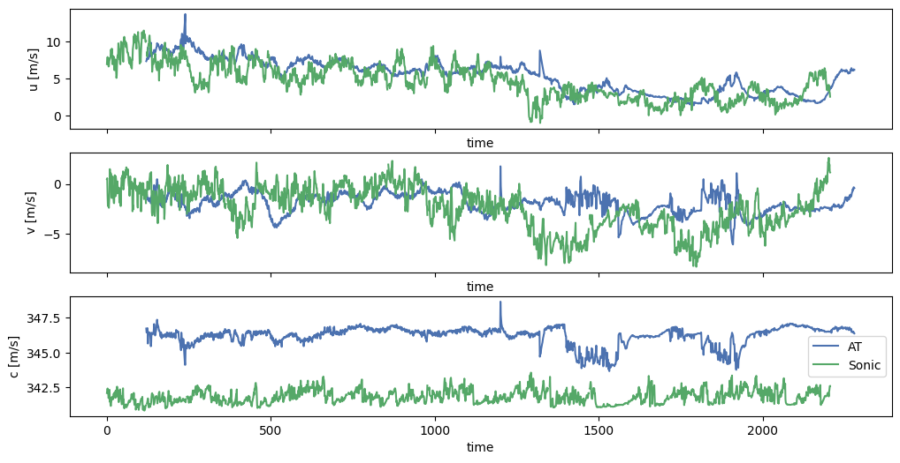
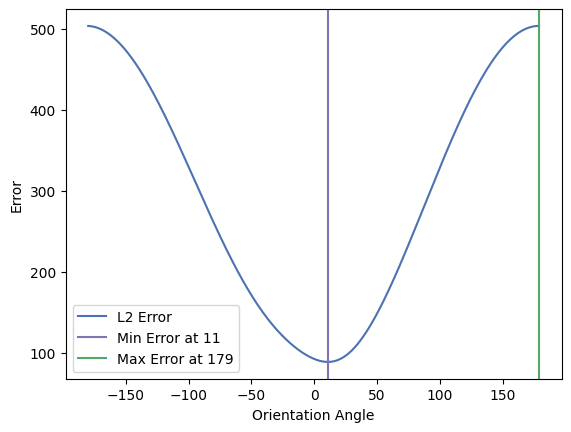
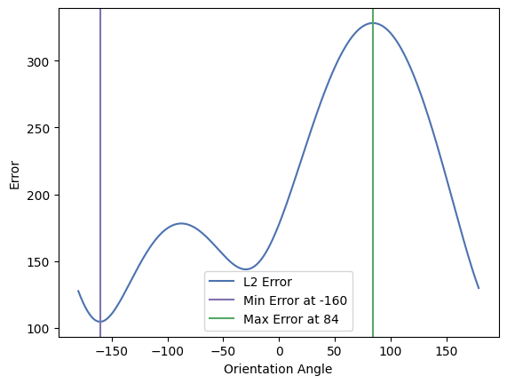
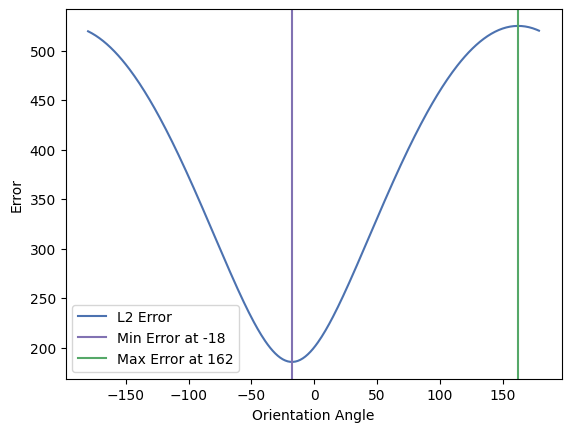
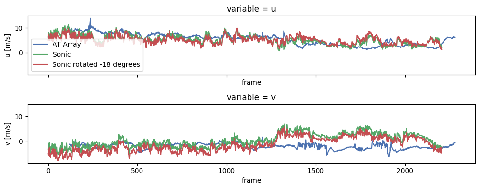

%load_ext autoreload
%autoreload 2
# hardware
import os
# analysis
import numpy as np
import xarray as xr
# vis
import matplotlib.pyplot as plt
plt.style.use('seaborn-v0_8-deep')
# Acoustic tomography package
import atom
# configuration object
from hydra import initialize, compose
from hydra.utils import instantiate
with initialize(version_base=None, config_path="../../conf/"):
cfg = compose(config_name="configs",)
Bulk flow validation against sonic anemometer#
While the sonic anemometer placed at one corner of the AT measurement domain are not expected be a perfect match, the bulk trends should line up fairly well. The sonic anemometer measures atmospheric velocity and acoustic virtual temperature (or Laplace adiabatic speed of sound, depending on the anemometer) at 20 Hz. The AT array measures at a nominal sampling frequency of 2 Hz. The AT estimate of bulk flow is also low-pass filtered, considering that it aggregates flow information over the 80 m \(\times\) 80 m array facility.
# this workflow considers multiple successive measurement periods of 1 min each, and concatenates them into a single longer record.
## identify acoustic (ATfiles) and auxiliary (auxfiles) data.
datapath = "/Users/nhamilt2/Documents/Projects/ATom/data/processedData/"
files = os.listdir(datapath)
ATfiles = [datapath+x for x in files if 'arrayOutput' in x]
auxfiles = [datapath+x for x in files if 'auxdata' in x]
## sort files
ATfiles.sort()
auxfiles.sort()
# remove the first file (incosistent record length)
auxfiles.pop(0)
ATfiles.pop(0)
'/Users/nhamilt2/Documents/Projects/ATom/data/processedData/arrayOutput_20190815123732.nc'
# load data
atdat = xr.open_mfdataset(ATfiles, chunks=None)
auxdat = []
for file in auxfiles:
auxdat.append(xr.load_dataset(file))
auxdat = xr.concat(auxdat, dim='time')
auxdat = auxdat.sortby('time')
# resample to 2 Hz
auxdat2 = auxdat.resample(time='0.5s').mean()
auxdat2.coords['frame'] = np.arange(auxdat2.u.shape[0])
auxdat2 = auxdat2.assign_coords(time = np.arange(auxdat2.u.shape[0]))
# extract data variables of interest
atDat = atdat[['u','v','c']].to_dataframe().to_xarray()
auxdat = auxdat2[['ux','uy']].to_dataframe().to_xarray()
fig, ax = plt.subplots(3,1,sharex=True, figsize=(12,6))
atDat.u.plot(ax=ax[0], label='AT')
auxdat2.u.plot(ax=ax[0], label='Sonic')
atDat.v.plot(ax=ax[1], label='AT')
auxdat2.v.plot(ax=ax[1], label='Sonic')
atDat.c.plot(ax=ax[2], label='AT')
auxdat2.c.plot(ax=ax[2], label='Sonic')
ax[2].legend()
# fig.savefig('figs/ts_comparison.png', dpi=200, bbox_inches='tight')
<matplotlib.legend.Legend at 0x177c92d50>

Check for correction of sonic orientation angle#
In some measurement periods, the alignment of the sonic anemometer was not known precisely and some misalignment was expected.
The following code rotates the frame of reference of the sonic anemometer and the associated velocity component signals, and seeks the orientation that minimizes error between the sonic and the atarray estimates of bulk flow.
def _rotation_matrix(theta, angtype="rad"):
if angtype == "deg":
theta = np.radians(theta)
rotmat = np.squeeze(
np.array([[np.cos(theta), -np.sin(theta)], [np.sin(theta), np.cos(theta)]])
)
return rotmat
def correctSonicOrientation(sonic, theta, angtype="deg"):
rotatedVel = np.dot( _rotation_matrix(theta, angtype=angtype), sonic
)
return rotatedVel
### Auxiliary data
sonic = auxdat.copy()
sonic['uy'] = -1*sonic['uy']
sonic = sonic.rename({'time':'frame'})
sonic = sonic.interpolate_na(dim='frame').to_array()
sonic = sonic.assign_coords({'variable':['u','v']})
atVec = atDat.interpolate_na(dim='frame')[['u','v']].to_array()
angles = np.arange(-180,180)
errx = np.zeros(len(angles))
erry = np.zeros(len(angles))
for ii, angle in enumerate(angles):
tmp = correctSonicOrientation(sonic, angle)
tmp = xr.DataArray(data=tmp, coords=sonic.coords, attrs=sonic.attrs)
errx[ii] = np.linalg.norm(atVec[0] - tmp[0])
erry[ii] = np.linalg.norm(atVec[1] - tmp[1])
plt.plot(angles, errx, label='L2 Error')
minerr = angles[np.argmin(errx)]
plt.axvline(minerr, c='C3', label='Min Error at {}'.format(minerr))
maxerr = angles[np.argmax(errx)]
plt.axvline(maxerr, c='C1', label='Max Error at {}'.format(maxerr))
plt.legend()
plt.xlabel('Orientation Angle')
plt.ylabel('Error')
Text(0, 0.5, 'Error')

plt.plot(angles, erry, label='L2 Error')
minerr = angles[np.argmin(erry)]
plt.axvline(minerr, c='C3', label='Min Error at {}'.format(minerr))
maxerr = angles[np.argmax(erry)]
plt.axvline(maxerr, c='C1', label='Max Error at {}'.format(maxerr))
plt.legend()
plt.xlabel('Orientation Angle')
plt.ylabel('Error')
Text(0, 0.5, 'Error')

angles = np.arange(-180,180)
err = np.zeros(len(angles))
for ii, angle in enumerate(angles):
tmp = correctSonicOrientation(sonic, angle)
tmp = xr.DataArray(data=tmp, coords=sonic.coords, attrs=sonic.attrs)
err[ii] = np.linalg.norm(atVec - tmp)
plt.plot(angles, err, label='L2 Error')
minerr = angles[np.argmin(err)]
plt.axvline(minerr, c='C3', label='Min Error at {}'.format(minerr))
maxerr = angles[np.argmax(err)]
plt.axvline(maxerr, c='C1', label='Max Error at {}'.format(maxerr))
plt.legend()
plt.xlabel('Orientation Angle')
plt.ylabel('Error')
Text(0, 0.5, 'Error')

sonicMinErr = correctSonicOrientation(sonic, minerr)
sonicMinErr = xr.DataArray(data=sonicMinErr, coords=sonic.coords, attrs=sonic.attrs)
sonicMaxErr = correctSonicOrientation(sonic, maxerr)
sonicMaxErr = xr.DataArray(data=sonicMaxErr, coords=sonic.coords, attrs=sonic.attrs)
Plot corrected time series#
much better match, especially for \(v\)!
fig, ax = plt.subplots(2,1,sharex=True, sharey=True, figsize=(10,4))
atVec[0].plot(ax=ax[0], label='AT Array')
sonic[0].plot(ax=ax[0], label='Sonic')
sonicMinErr[0].plot(ax=ax[0], label=f'Sonic rotated {minerr} degrees')
ax[0].set_ylabel('u [m/s]')
ax[0].legend()
atVec[1].plot(ax=ax[1])
sonic[1].plot(ax=ax[1], label='Sonic')
sonicMinErr[1].plot(ax=ax[1], label=f'Sonic rotated {minerr} degrees')
ax[1].set_ylabel('v [m/s]')
fig.tight_layout()
